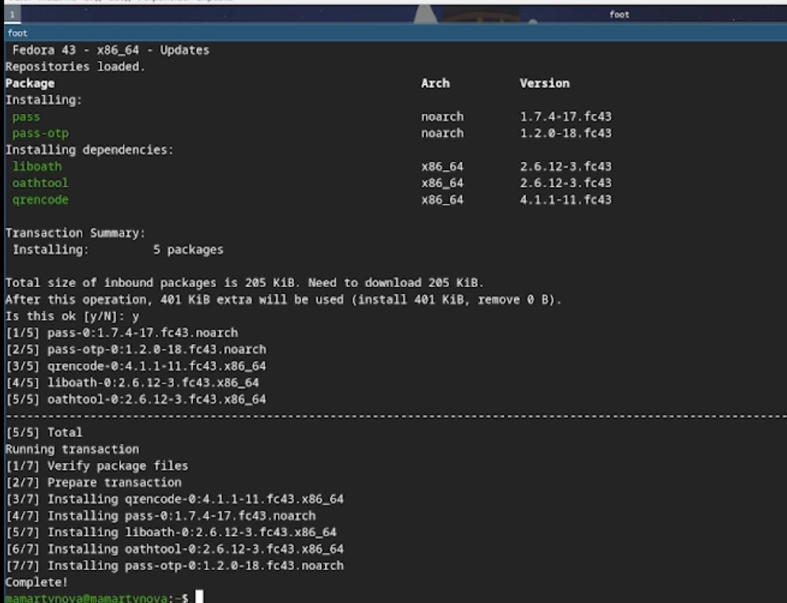
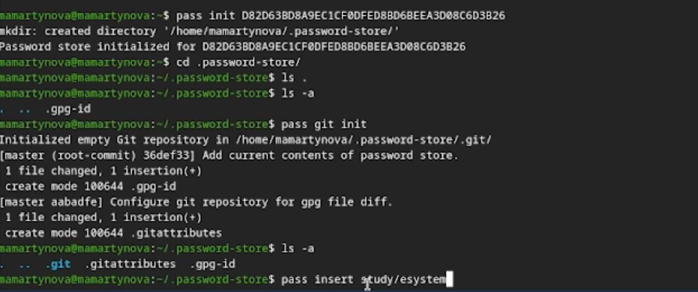
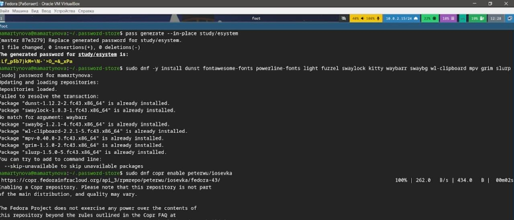
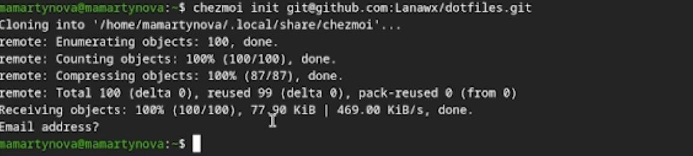
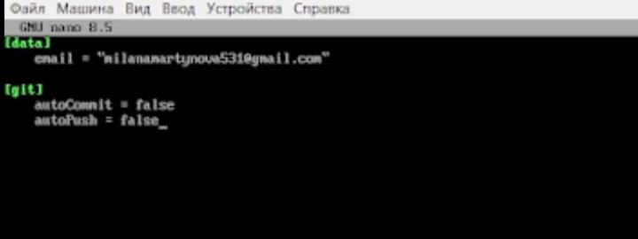

Изучить и освоить работу с инструментами pass, gopass и chezmoi, а также механизм Native Messaging. Настроить их синхронизацию с удаленным Git-репозиторием.
pass реализует простой, но надежный подход Unix: пароли хранятся в виде набора зашифрованных GPG-файлов, разложенных по папкам. Это дает свободу в организации структуры паролей, но если вы планируете использовать сторонние графические оболочки или расширения, структуру нужно продумывать заранее. chezmoi решает проблему синхронизации настроек (dotfiles). Он хранит эталонное состояние конфигов в отдельном каталоге (~/.local/share/chezmoi), который синхронизируется с Git. Особенность chezmoi в том, что он умеет не просто копировать файлы, а собирать их как конструктор: часть файлов копируется без изменений, а часть генерируется через шаблоны, подставляя данные из файла локальной конфигурации (chezmoi.toml). Это позволяет иметь, например, немного различающиеся настройки для рабочего и домашнего компьютера.
Устанавливаю pass.(рис. 1)

Инициаилизрую pass на машине и делаю первый пароль. (рис. 2)

Устанавливаю дополнительное ПО и шрифты. (рис. 3)

Инициализирую chezmoi с указанием на указанный в лабораторной работы репозиторий. (рис. 4)

Проверяю изменения в удаленном репозитории (рис. 5)
Отключаю автоматические сохранение изменений. (рис. 6)

В ходе работы были изучены и освоены утилиты pass, gopass и chezmoi, а также механизм Native Messaging. Выполнена настройка их интеграции с системами контроля версий (Git) для синхронизации данных и конфигураций.